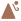

<!doctype html>
<html lang="en">
    <head>
        <meta charset="utf-8">
        <meta http-equiv="X-UA-Compatible" content="IE=edge">
        <meta name="viewport" content="initial-scale=1,user-scalable=no,maximum-scale=1,width=device-width">
        <meta name="mobile-web-app-capable" content="yes">
        <meta name="apple-mobile-web-app-capable" content="yes">
        <link rel="stylesheet" href="css/leaflet.css"><link rel="stylesheet" href="css/L.Control.Locate.min.css">
        <link rel="stylesheet" href="css/qgis2web.css"><link rel="stylesheet" href="css/fontawesome-all.min.css">
        <link rel="stylesheet" href="css/MarkerCluster.css">
        <link rel="stylesheet" href="css/MarkerCluster.Default.css">
        <link rel="stylesheet" href="css/leaflet-control-geocoder.Geocoder.css">
        <style>
        html, body, #map {
            width: 100%;
            height: 100%;
            padding: 0;
            margin: 0;
        }
        </style>
        <title></title>
    </head>
    <body>
        <div id="map">
        </div>
        <script src="js/qgis2web_expressions.js"></script>
        <script src="js/leaflet.js"></script><script src="js/L.Control.Locate.min.js"></script>
        <script src="js/leaflet.rotatedMarker.js"></script>
        <script src="js/leaflet.pattern.js"></script>
        <script src="js/leaflet-hash.js"></script>
        <script src="js/Autolinker.min.js"></script>
        <script src="js/rbush.min.js"></script>
        <script src="js/labelgun.min.js"></script>
        <script src="js/labels.js"></script>
        <script src="js/leaflet-control-geocoder.Geocoder.js"></script>
        <script src="js/leaflet.markercluster.js"></script>
        <script src="data/Homestay_1.js"></script>
        <script src="data/Tourist_Spots_2.js"></script>
        <script>
        var highlightLayer;
        function highlightFeature(e) {
            highlightLayer = e.target;

            if (e.target.feature.geometry.type === 'LineString') {
              highlightLayer.setStyle({
                color: '#ffff00',
              });
            } else {
              highlightLayer.setStyle({
                fillColor: '#ffff00',
                fillOpacity: 1
              });
            }
        }
        var map = L.map('map', {
            zoomControl:true, maxZoom:28, minZoom:1
        }).fitBounds([[27.06133632004168,88.45123796390673],[27.23220141649497,88.71373797157268]]);
        var hash = new L.Hash(map);
        map.attributionControl.setPrefix('<a href="https://github.com/tomchadwin/qgis2web" target="_blank">qgis2web</a> &middot; <a href="https://leafletjs.com" title="A JS library for interactive maps">Leaflet</a> &middot; <a href="https://qgis.org">QGIS</a>');
        var autolinker = new Autolinker({truncate: {length: 30, location: 'smart'}});
        L.control.locate({locateOptions: {maxZoom: 19}}).addTo(map);
        var bounds_group = new L.featureGroup([]);
        function setBounds() {
        }
        map.createPane('pane_OpenStreetMap_0');
        map.getPane('pane_OpenStreetMap_0').style.zIndex = 400;
        var layer_OpenStreetMap_0 = L.tileLayer('https://tile.openstreetmap.org/{z}/{x}/{y}.png', {
            pane: 'pane_OpenStreetMap_0',
            opacity: 1.0,
            attribution: '',
            minZoom: 1,
            maxZoom: 28,
            minNativeZoom: 0,
            maxNativeZoom: 19
        });
        layer_OpenStreetMap_0;
        map.addLayer(layer_OpenStreetMap_0);
        function pop_Homestay_1(feature, layer) {
            layer.on({
                mouseout: function(e) {
                    for (i in e.target._eventParents) {
                        e.target._eventParents[i].resetStyle(e.target);
                    }
                },
                mouseover: highlightFeature,
            });
            var popupContent = '<table>\
                    <tr>\
                        <td colspan="2">' + (feature.properties['fid'] !== null ? autolinker.link(feature.properties['fid'].toLocaleString()) : '') + '</td>\
                    </tr>\
                    <tr>\
                        <td colspan="2">' + (feature.properties['Homestay'] !== null ? autolinker.link(feature.properties['Homestay'].toLocaleString()) : '') + '</td>\
                    </tr>\
                    <tr>\
                        <th scope="row">Website</th>\
                        <td>' + (feature.properties['Website'] !== null ? autolinker.link(feature.properties['Website'].toLocaleString()) : '') + '</td>\
                    </tr>\
                    <tr>\
                        <th scope="row">Phone</th>\
                        <td>' + (feature.properties['Phone'] !== null ? autolinker.link(feature.properties['Phone'].toLocaleString()) : '') + '</td>\
                    </tr>\
                    <tr>\
                        <th scope="row">Direction</th>\
                        <td>' + (feature.properties['Direction'] !== null ? autolinker.link(feature.properties['Direction'].toLocaleString()) : '') + '</td>\
                    </tr>\
                </table>';
            layer.bindPopup(popupContent, {maxHeight: 400});
        }

        function style_Homestay_1_0() {
            return {
                pane: 'pane_Homestay_1',
        rotationAngle: 0.0,
        rotationOrigin: 'center center',
        icon: L.icon({
            iconUrl: 'markers/ranger_light.svg',
            iconSize: [22.799999999999997, 22.799999999999997]
        }),
                interactive: true,
            }
        }
        map.createPane('pane_Homestay_1');
        map.getPane('pane_Homestay_1').style.zIndex = 401;
        map.getPane('pane_Homestay_1').style['mix-blend-mode'] = 'normal';
        var layer_Homestay_1 = new L.geoJson(json_Homestay_1, {
            attribution: '',
            interactive: true,
            dataVar: 'json_Homestay_1',
            layerName: 'layer_Homestay_1',
            pane: 'pane_Homestay_1',
            onEachFeature: pop_Homestay_1,
            pointToLayer: function (feature, latlng) {
                var context = {
                    feature: feature,
                    variables: {}
                };
                return L.marker(latlng, style_Homestay_1_0(feature));
            },
        });
        bounds_group.addLayer(layer_Homestay_1);
        map.addLayer(layer_Homestay_1);
        function pop_Tourist_Spots_2(feature, layer) {
            layer.on({
                mouseout: function(e) {
                    for (i in e.target._eventParents) {
                        e.target._eventParents[i].resetStyle(e.target);
                    }
                },
                mouseover: highlightFeature,
            });
            var popupContent = '<table>\
                    <tr>\
                        <td colspan="2">' + (feature.properties['fid'] !== null ? autolinker.link(feature.properties['fid'].toLocaleString()) : '') + '</td>\
                    </tr>\
                    <tr>\
                        <th scope="row">Location</th>\
                        <td>' + (feature.properties['Location'] !== null ? autolinker.link(feature.properties['Location'].toLocaleString()) : '') + '</td>\
                    </tr>\
                    <tr>\
                        <th scope="row">Type</th>\
                        <td>' + (feature.properties['Type'] !== null ? autolinker.link(feature.properties['Type'].toLocaleString()) : '') + '</td>\
                    </tr>\
                    <tr>\
                        <th scope="row">Direction</th>\
                        <td>' + (feature.properties['Direction'] !== null ? autolinker.link(feature.properties['Direction'].toLocaleString()) : '') + '</td>\
                    </tr>\
                </table>';
            layer.bindPopup(popupContent, {maxHeight: 400});
        }

        function style_Tourist_Spots_2_0(feature) {
            switch(String(feature.properties['Type'])) {
                case 'Historical':
                    return {
                pane: 'pane_Tourist_Spots_2',
        rotationAngle: 0.0,
        rotationOrigin: 'center center',
        icon: L.icon({
            iconUrl: 'markers/walker.svg',
            iconSize: [15.2, 15.2]
        }),
                interactive: true,
            }
                    break;
                case 'View Point':
                    return {
                pane: 'pane_Tourist_Spots_2',
        rotationAngle: 0.0,
        rotationOrigin: 'center center',
        icon: L.icon({
            iconUrl: 'markers/Landslide-mudslide.svg',
            iconSize: [15.2, 15.2]
        }),
                interactive: true,
            }
                    break;
            }
        }
        map.createPane('pane_Tourist_Spots_2');
        map.getPane('pane_Tourist_Spots_2').style.zIndex = 402;
        map.getPane('pane_Tourist_Spots_2').style['mix-blend-mode'] = 'normal';
        var layer_Tourist_Spots_2 = new L.geoJson(json_Tourist_Spots_2, {
            attribution: '',
            interactive: true,
            dataVar: 'json_Tourist_Spots_2',
            layerName: 'layer_Tourist_Spots_2',
            pane: 'pane_Tourist_Spots_2',
            onEachFeature: pop_Tourist_Spots_2,
            pointToLayer: function (feature, latlng) {
                var context = {
                    feature: feature,
                    variables: {}
                };
                return L.marker(latlng, style_Tourist_Spots_2_0(feature));
            },
        });
        var cluster_Tourist_Spots_2 = new L.MarkerClusterGroup({showCoverageOnHover: false,
            spiderfyDistanceMultiplier: 2});
        cluster_Tourist_Spots_2.addLayer(layer_Tourist_Spots_2);

        bounds_group.addLayer(layer_Tourist_Spots_2);
        cluster_Tourist_Spots_2.addTo(map);
        map.on("zoomend", function(e) {
            if (map.getZoom() <= 19 && map.getZoom() >= 11) {
                map.addLayer(layer_Homestay_1);
            } else if (map.getZoom() > 19 || map.getZoom() < 11) {
                map.removeLayer(layer_Homestay_1);
            }
        });
            if (map.getZoom() <= 19 && map.getZoom() >= 11) {
                map.addLayer(layer_Homestay_1);
            } else if (map.getZoom() > 19 || map.getZoom() < 11) {
                map.removeLayer(layer_Homestay_1);
            }
        var osmGeocoder = new L.Control.Geocoder({
            collapsed: true,
            position: 'topleft',
            text: 'Search',
            title: 'Testing'
        }).addTo(map);
        document.getElementsByClassName('leaflet-control-geocoder-icon')[0]
        .className += ' fa fa-search';
        document.getElementsByClassName('leaflet-control-geocoder-icon')[0]
        .title += 'Search for a place';
        var baseMaps = {};
        L.control.layers(baseMaps,{'Tourist_Spots<br /><table><tr><td style="text-align: center;"></td><td>Historical</td></tr><tr><td style="text-align: center;"></td><td>View Point</td></tr></table>': cluster_Tourist_Spots_2,' Homestay': layer_Homestay_1,"OpenStreetMap": layer_OpenStreetMap_0,}).addTo(map);
        map.on("zoomend", function(){

                if (map.hasLayer(layer_Homestay_1)) {
                    if (map.getZoom() <= 15 && map.getZoom() >= 19) {
                        layer_Homestay_1.eachLayer(function (layer) {
                            layer.openTooltip();
                        });
                    } else {
                        layer_Homestay_1.eachLayer(function (layer) {
                            layer.closeTooltip();
                        });
                    }
                }
                if (map.hasLayer(layer_Tourist_Spots_2)) {
                    if (map.getZoom() <= 13 && map.getZoom() >= 19) {
                        layer_Tourist_Spots_2.eachLayer(function (layer) {
                            layer.openTooltip();
                        });
                    } else {
                        layer_Tourist_Spots_2.eachLayer(function (layer) {
                            layer.closeTooltip();
                        });
                    }
                }
        });
        setBounds();
        var i = 0;
        layer_Homestay_1.eachLayer(function(layer) {
            var context = {
                feature: layer.feature,
                variables: {}
            };
            layer.bindTooltip((layer.feature.properties['Homestay'] !== null?String('<div style="color: #6d6d6d; font-size: 6pt; font-weight: bold; font-family: \'Arial\', sans-serif;">' + layer.feature.properties['Homestay']) + '</div>':''), {permanent: true, offset: [-0, -16], className: 'css_Homestay_1'});
            labels.push(layer);
            totalMarkers += 1;
              layer.added = true;
              addLabel(layer, i);
              i++;
        });
        var i = 0;
        layer_Tourist_Spots_2.eachLayer(function(layer) {
            var context = {
                feature: layer.feature,
                variables: {}
            };
            layer.bindTooltip((layer.feature.properties['Location'] !== null?String('<div style="color: #323232; font-size: 7pt; font-family: \'Arial\', sans-serif;">' + layer.feature.properties['Location']) + '</div>':''), {permanent: true, offset: [-0, -16], className: 'css_Tourist_Spots_2'});
            labels.push(layer);
            totalMarkers += 1;
              layer.added = true;
              addLabel(layer, i);
              i++;
        });
                if (map.hasLayer(layer_Homestay_1)) {
                    if (map.getZoom() <= 15 && map.getZoom() >= 19) {
                        layer_Homestay_1.eachLayer(function (layer) {
                            layer.openTooltip();
                        });
                    } else {
                        layer_Homestay_1.eachLayer(function (layer) {
                            layer.closeTooltip();
                        });
                    }
                }
                if (map.hasLayer(layer_Tourist_Spots_2)) {
                    if (map.getZoom() <= 13 && map.getZoom() >= 19) {
                        layer_Tourist_Spots_2.eachLayer(function (layer) {
                            layer.openTooltip();
                        });
                    } else {
                        layer_Tourist_Spots_2.eachLayer(function (layer) {
                            layer.closeTooltip();
                        });
                    }
                }
        resetLabels([layer_Homestay_1,layer_Tourist_Spots_2]);
        map.on("zoomend", function(){
            resetLabels([layer_Homestay_1,layer_Tourist_Spots_2]);
        });
        map.on("layeradd", function(){
            resetLabels([layer_Homestay_1,layer_Tourist_Spots_2]);
        });
        map.on("layerremove", function(){
            resetLabels([layer_Homestay_1,layer_Tourist_Spots_2]);
        });
        </script>
    </body>
</html>
